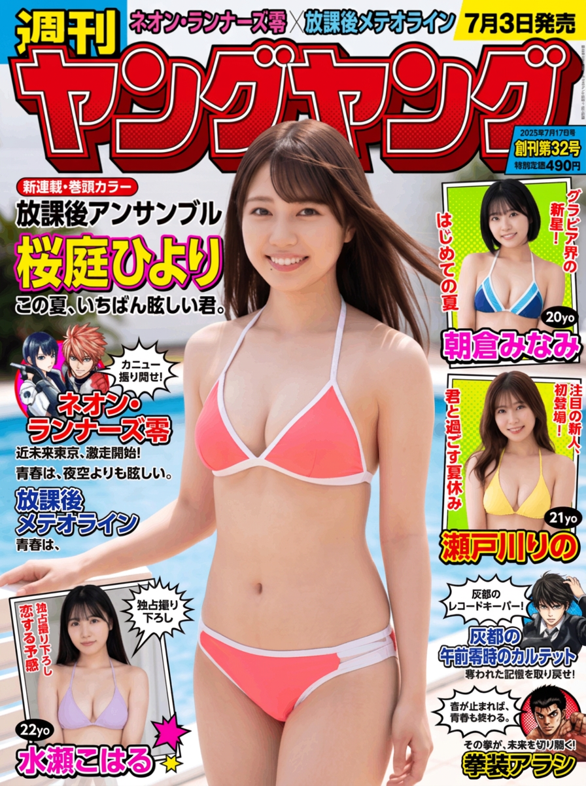

WEEKLY MAGAZINE GRAVURE
週刊ヤングヤング No.32
放課後の彼女
桜庭ひよりが青年向け週刊漫画誌の 巻中グラビアに初登場。 身近なかわいらしさと、 ふとした瞬間の大人びた表情を収録しています。
掲載内容
架空の青年向け漫画誌「週刊ヤングヤング」第32号に、 桜庭ひよりの巻中グラビア 「放課後の彼女」が掲載されます。
学園を思わせるスタジオ、夏の河川敷、 カジュアルな部屋着で過ごす室内など、 親しみのある場面を中心に撮影。 過度な露出に頼らず、視線と距離感によって 読者を引き込む構成です。